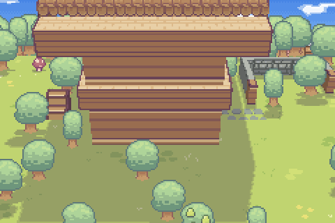
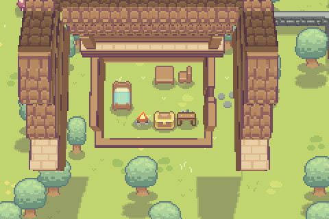
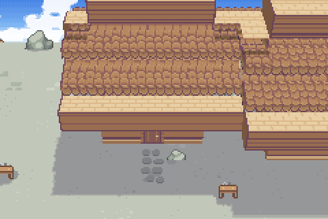
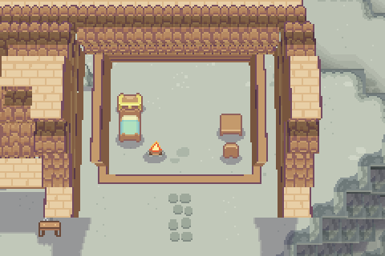

An AI player that builds what it is asked: what failed live, the executor that fixed it, and two theorems about building
LaTeX source · live counts · theorem checks · scenarios · data and history
Summary
An AI player for Nexel Worlds, a voxel survival game, should build what a language model describes. In three live trials it built nothing designed: between the model's goals a learned body, rewarded for first-time events, crafted away the materials and dug up what had been built (554 digs on tiles it had itself built on, of 750 placements); no component owned a build to its end; and every builder test started with the materials in hand. A code executor now owns a drawn build: it gathers the design's bill of materials, then lays it. In the simulator it stands 56 of 60 designs on fresh seeds from an empty inventory (0 before); live, it built a room the game's judge scores 6/6 for working and 8/8 for sense, then a two-storey house with a gabled roof of shingles and plank eaves and ridge (201 of 203 cells, the last two a flaw of the design since fixed), then two houses whose best room scores above the best real player's on all three of the judge's counts. On eight non-building goals over 20 seeds, the goal's code skill succeeds as often as the learned body or more on all eight, in 2 to 22 times fewer decisions. Two results are proved here and checked in the game's simulator: the bill the executor gathers is the least raw material a design takes (Theorem 1; the earlier bill overcounted by up to the recipes' yield), and a flight of stairs reaches its storey exactly when the column beside its top is laid below it (Theorem 2; this ordering broke the three-storey tower).
The system
- Mind. A local language model (Qwen3-30B-A3B, 4-bit) reads the game as text every $\sim$20 s and sets a goal (gather, craft, ask, build) and, in its own words, the build it wants, kept until it names another.
- Architect. The same model turns the words into a design (shape, storeys, roof style and materials, furniture); code draws it in 3D; the game's own judge checks it and a check that it keeps what the words asked; the model redraws up to 5 times with what failed.
- Executor. While a drawn build is unfinished it chooses every action: it gathers the bill of materials (Theorem 1), then lays the cells in an order the game holds (Theorem 2 for stairs).
- Skills. A gather or craft goal is carried out by code (walk to a source, dig, craft, place a station), looking further when nothing in view gives the item.
- Body. A policy trained in the simulator with reinforcement learning (reward: $+1$ the first time each of $\sim$150 events happens, goal completion with progress shaping, the old hut's judged grade). It now acts only when nothing above has a step, and unhurt it may move, eat, fight and talk but not craft, place or dig.
Live trials
| trial | asked | designed | what stood |
|---|---|---|---|
| 4 | a gabled roof of shingles | a flat $5\times4$ (judged 19/19) | nothing designed |
| 5 | two storeys, a flat stone roof | the same, judged whole | 0 of its 209 cells |
| 6 | a two-storey round house, gabled shingles | nothing drawn | a $3\times3$ hut of the old builder |
| 7 | a house, a gable roof of shingles | two houses, gabled shingles, plank eaves and ridge | a room judged 6/6, 8/8, 4/8 |
| 8 | a two-storey house, a gable roof of shingles | the same, $4\times3$, plank eaves and ridge | 201 of 203 cells; judged 6/6, 8/8, 6/8 |
| 9 | a house, a gable roof of shingles | houses on one site, gabled shingles, plank eaves and ridge | two rooms; the best judged 6/6, 8/8, 7/8 |
research/data/trials, recounted by research/live_counts.py) or, where marked,
from the agent's own logs.Trial 4: the judge checked the rules, not the request. The design passed every rule of the game's judge and ignored the words; a check that a design keeps what the words name (roof style, shape, storeys) was added. The language model spent the hour on fibre (111 plans, 0 of 15 goals done; agent log) while holding the two beds it was gathering for: its text said what a bed takes, not that it owned two.
Trial 5: the agent undid its own build. 750 placements, and 554 digs on tiles the agent itself had built on; none of the design's 209 cells stood at the end (agent log). Between build goals the learned body and the gathering verb treated the site as land like any other.
Trial 6: nothing was built. Of 171 goals the language model set, none was a build (agent log); two build descriptions it wrote were dropped, because build words were kept only with the goal “build”. Of 912 crafts, 751 were building materials crafted by the old builder for its hut; the other 161 were things nothing asked for (17 campfires, 16 spears, 15 chairs, 7 bandanas, …), and they used the wood and fibre the language model was gathering for a bed: the inventory read 0 of each for the hour.
Trial 7: the executor builds. The architect drew two houses on one site; the executor gathered the bill and laid the first: a closed $3\times3$ room with bed, chest, campfire, table, chair and a door, under a roof. The game's judge scores it 6/6 for working and 8/8 for sense (the best real player's room in that world: 4/6 and 5/8), 4/8 for looks (mixed wall materials, no windows, no path). Unasked crafts fell to 17 (161 in trial 6). Two faults stopped the second house: the language model's requests failed 75 times from minute 19 (not logged; failures are now written with their cause), and with the mind silent the learned body acted freely, placing 22 workbenches and digging 134 times on tiles it had built on: trial 7 ran before the body was restricted (§ The system).
Trial 8: a two-storey house. With the executor owning builds, skills owning goals and the learned body restricted, the agent built a two-storey house with a gabled roof of shingles, plank eaves and ridge, outside stairs and a furnished room, 201 of its 203 cells in about 12 minutes (Figure L). The game's judge scores the room 6/6, 8/8 and 6/8: the best real player's in that world, 4/6, 5/8 and 6/8. The two cells left were the ridge's ends, nine layers up over the gable's overhang: out of reach from every stand (fixed in the design: a ridge stops at the end walls). A first run of this trial had its language model fail on every request: an aim made of a crafted item reached a set operation with a tuple; the error log added after trial 7 named it within minutes.


Trial 9: two houses. With the ridge fixed, the agent built two houses on one site, each closed, roofed with shingle slopes and plank eaves and ridge, and furnished, then named a third (Figure M). The language model made 185 thoughts without an error; the event log counts 0 digs on tiles the agent had built on (trial 5: 554; trial 7, before the learned body was restricted: 134). The game's judge scores the better room 6/6, 8/8 and 7/8, above the best real player's on all three (4/6, 5/8, 6/8); the point left is windows, which the game cannot yet give a closed room (a window is a fence, and a fence opens the room to the game's shelter rule).


Causes. (i) The learned body's reward pays $+1$ the first time each of $\sim$150 events happens in an episode, as in Crafter [Hafner 2022]; it acts whenever no goal steers it, and nothing in that reward values a design standing, so building and unbuilding are alike to it [Amodei et al. 2016]. (ii) No owner of long-horizon execution: the language model replans every $\sim$20 s and the body acts between. Agents that do build structures let a model plan and code execute to the end [Wang et al. 2023; White et al. 2025; CraftUtopia 2026]; learned controllers do short skills [Lifshitz et al. 2023; Cai et al. 2024; JARVIS-VLA 2025]. (iii) A test gap: the builder's tests started with every piece in hand; only the hour-long live trial tested gathering. (iv) The trial 5 design was infeasible regardless: its roof of stone blocks is a material no verb can obtain; the designer may choose what the executor cannot do.
The executor and the skills, in the simulator
Building. A drawn design's unlaid cells are turned into a bill of raw material (Theorem 1), gathered in trips of 24, then laid by the builder with a full inventory. Six designs on three seeds each, from an empty inventory: 18 of 18 stand whole, in 241 to 1 381 decisions; but these three seeds are the ones the faults below were found and fixed on. On ten fresh seeds per design, used to fix nothing until the last fault below, 56 of 60 stand whole ($93\%$, Wilson 95% interval $84$–$97\%$; 51 of 60 before that fault was fixed) (Figure S). Before the executor the builder, fetching a craft's worth at a time, laid a fifth of the smallest house in 5 000 decisions.
What this test exposed, each a fault the live trials could only show as nothing built: computing the action mask re-sited the house whenever the agent was more than 64 tiles away (each gathering trip moved it); fetching per craft, the agent walked between trees and site, each out of view of the other; a hill under a roof's overhang made a cell unplaceable for ever; a flight of stairs takes one item per step; the builder recorded a plank and the wall on it as one cell (Theorem 2); standing inside its own site, it had nowhere to put a workbench; a tile to clear lay “behind the land” from where it stood and was dug at 199 times (now tried from another side); a hill one layer under the eaves left no storey of room, which the game requires under a block (the site check now asks for it); walled in by its own wall, rocks and a bush, it walked nowhere 199 times (it now digs out, and a walk that goes nowhere is looked past); and, found on the fresh seeds, a search for material walked 230 tiles off and the home was given up (a search now stays within 200 tiles of it). Still failing on the fresh seeds: four runs, each a different case.
Other goals. Eight goals from an empty inventory, 20 seeds, paired: the learned body choosing every action as it played live, against the goal's code skill (Table G). The skill succeeds as often or more on all eight and needs 2 to 22 times fewer decisions; it looks further when nothing in view gives the item (gathering stone: 17 to 20 of 20).
| goal | learned body: done (median decisions) | skill: done (median decisions) |
|---|---|---|
| gather wood | 18/20 (59) | 20/20 (8) |
| gather stone | 12/20 (136) | 20/20 (19) |
| gather fibre | 13/20 (32) | 20/20 (9) |
| gather berries | 16/20 (36) | 20/20 (6) |
| craft workbench | 19/20 (15) | 20/20 (4) |
| craft axe | 4/20 (334) | 17/20 (19) |
| craft bed | 7/20 (338) | 17/20 (17) |
| craft door | 19/20 (18) | 20/20 (3) |
data/scenarios.csv, nexel-agent tools/scenarios.py).Theorem 1. The least raw material a design takes
A recipe table: each craftable item $k$ has one recipe, taking $m_{k,c}$ of each input $c$, yielding $y_k\ge1$, and possibly a station $\sigma_k$ (a workbench), used but not consumed; land items $L$ (wood, stone, fibre) are gathered, never crafted; the graph $k\to c$ (inputs and station) is acyclic. Given a demand $D$ (what the design's unlaid cells take) and an inventory $I$, process the items in a topological order that puts every item after all items that consume it, with $\mathit{need}_k=D_k+\sum_p m_{p,k}x_p+[\,k=\sigma_p$ for some $p$ with $x_p>0$, first time$\,]$ and $$x_k=\Big\lceil\frac{(\mathit{need}_k-I_k)^+}{y_k}\Big\rceil (k\notin L),\qquad B_k=(\mathit{need}_k-I_k)^+ (k\in L).$$
Proof
Check The executor had expanded cell by cell: a gabled house's 107 shingles (2 per wood) counted 107 wood, 54 do; its whole bill falls from 181 wood and 6 stone to 104 and 4. Built from exactly $B$, with no gathering, 14 of 15 design-seeds stand whole (Table T1); 7 end with nothing left. The leftovers are wood the builder got clearing trees off the site (seed 9: 6 gained, 108 used, 4 above $B$: the builder is not optimal, the bound is). The one failure, the round home on seed 9, was a builder stall since fixed (§ executor), not a short bill.
So the executor gathers exactly what the design needs: no trip wasted on a wrong count, nothing short.
| design | bill $B$ (wood, stone, fibre) | stands whole from $B$ | raw left |
|---|---|---|---|
| gabled house | 104, 4, 3 | 3/3 | 0, 2, 2 |
| two storeys | 115, 4, 3 | 3/3 | 0, 2, 2 |
| round home | 99, 4, 3 | 2/3 | 0, –, 4 |
| tower | 157, 4, 3 | 3/3 | 0, 0, 2 |
| cross | 174, 4, 3 | 3/3 | 0, 0, 0 |
data/t_bill.csv, nexel-agent tools/theorems.py bill).Theorem 2. When a flight of stairs reaches its storey
The game's rule (nexel-worlds sim/climbing.py, flight): a flight whose top step is at tile $t$, on
ground at height $h$, runs up to the first surface $s$ found scanning the four tiles beside $t$ in a fixed order and
each tile's surfaces from the lowest, such that $h+2\le s\le h+7$ and the two cells above $s$ are open. A design's
storey $j$ stands on a floor whose top is at $h+3j$; a wall of storey $j$ fills the cells above it; a door does not.
The flight to storey $k$ ($k\le2$, so $h+3k\le h+7$) has its top beside the door column $c$ of storey $k$, and the
other tiles beside $t$ have no surface in $[h+2,h+7]$ (the site is level around the build).
Proof
Check In the simulator, each multi-storey design stamped whole but its stairs, with one wall of the door column below the flight's storey taken out or none, a flight laid from the planned stand (Table T2): with the column standing, every flight reaches its storey; without the first storey's wall, the tower's top flight stops at storey 1.
So a builder must lay a flight only after its door column below stands, and must not count a cell as laid when another piece shares its place. Ours did both wrong: its record of what it laid up a storey was keyed by place alone, so the first floor's plank read as the wall standing on it; the wall never went up, the flight stopped at storey 1, and the tower's top storey was out of reach from an empty inventory (it stood from a full one only because the order happened to lay the wall first). With the record keyed by block or thing and each flight after its column, the tower stands from an empty inventory on 2 of 3 seeds.
| design | flight to storey | wall taken out | storey reached |
|---|---|---|---|
| two storeys | 1 | none | 1 |
| tower | 1 | none | 1 |
| tower | 2 | none | 2 |
| tower | 2 | storey 1's | 1 |
data/t_flight.csv, nexel-agent tools/theorems.py flight).Next, and open questions
- The learned body. Its role is now reflexes and what no skill can step. Retraining it as a few short skills conditioned on a reward weighting [USFA, Borsa et al. 2019], the skills chosen so that combining them by generalised policy improvement [Barreto et al. 2017] is optimal for every weighting [SFOLS, Alegre et al. 2022], each rewarded by shaping on progress the game verifies [Ng et al. 1999]; measured on the goal table above.
- The language model under load. In trial 7 its requests failed 75 times; the executor carried on, the second house did not start. Requests that outlive the server's queue should be dropped server-side, not only by the client.
- The last three stalls. Seed 21 twice (a roof cell, a tower wall) and the T on seed 7: each a run of decisions with no piece laid, to be traced as the six faults above were.
- Evaluation. Live trials cost an hour of a shared machine: the simulator boards are the measure, the live trial their check; more seeds, paired between versions, an interval on every rate.
Revisions
4. Only our own results are proved; known ones are cited where used. Two theorems with proofs and checks in the game's simulator: the least bill (Theorem 1; it found the executor's bill overcounting by up to the recipes' yield) and the stairs ordering (Theorem 2; it explains the tower). Removed: the successor-feature, GPI and shaping sections of revision 3, which restated others' theorems. Added: live trial 7, the goal table, the board after the fixes (17 of 18).
3 (after review). Live counts recounted from the games' event logs, which ship with the notes. Retracted: a gradient-cosine split rule (it detects convergence, not conflict), a circular reward-kind experiment, a result that came from a tie-break.
References
- Alegre, Bazzan, da Silva (2022). Optimistic Linear Support and Successor Features as a Basis for Optimal Policy Transfer (SFOLS). ICML.
- Amodei et al. (2016). Concrete Problems in AI Safety. arXiv:1606.06565.
- Barreto et al. (2017). Successor Features for Transfer in Reinforcement Learning. NeurIPS.
- Borsa et al. (2019). Universal Successor Features Approximators (USFA). ICLR.
- Cai et al. (2024). GROOT: Learning to Follow Instructions by Watching Gameplay Videos. ICLR.
- CraftUtopia (2026). An LLM-based Multi-Agent System for Collaborative Construction in Minecraft. AAMAS demo track, ifaamas.org/Proceedings/aamas2026/pdfs/PUIJ7087.pdf.
- Hafner (2022). Benchmarking the Spectrum of Agent Capabilities (Crafter). ICLR.
- JARVIS-VLA (2025). Post-training vision-language models to play visual games with keyboard and mouse. ACL Findings; arXiv:2503.16365.
- Lifshitz et al. (2023). STEVE-1: A Generative Model for Text-to-Behavior in Minecraft. NeurIPS.
- Ng, Harada, Russell (1999). Policy invariance under reward transformations: theory and application to reward shaping. ICML.
- Wang et al. (2023). Voyager: An Open-Ended Embodied Agent with Large Language Models. arXiv:2305.16291.
- White et al. (2025). Collaborating Action by Action: a multi-agent LLM framework for embodied reasoning (Mindcraft). arXiv:2504.17950.